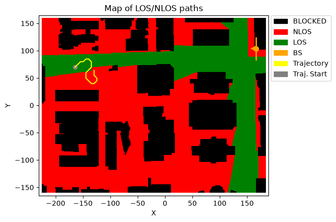
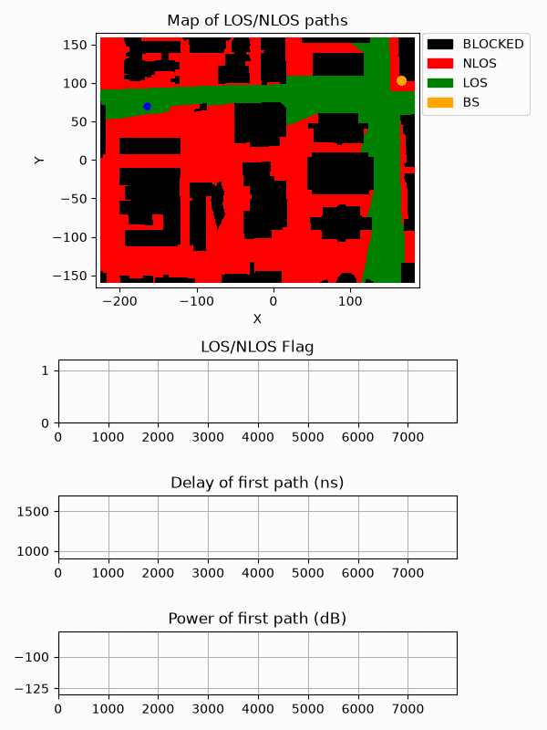

Animating a UE Trajectory in a DeepMIMO Scenario
This notebook demonstrates how to use NeoRadium to animate a user equipment (UE) moving along a trajectory in a DeepMIMO scenario. It first opens a DeepMIMO scenario, creates a random trajectory, and then uses the DeepMimoData.animateTrajectory function to generate an animation of the UE movement on the map.
In addition to the animated trajectory, the notebook shows three time-varying quantities below the map:
LOS/NLOS flag: indicates whether the UE has a line-of-sight path to the base station at each trajectory point.
First-path delay: shows the delay of the first propagation path along the trajectory.
First-path power: shows the power, or path gain/loss, of the first propagation path along the trajectory.
The animation is created using a graph callback function. The callback is first called to configure the plots and is then called repeatedly during the animation to update the plot values as the UE moves from one trajectory point to the next.
Notes
The trajectory is generated from points on the DeepMIMO grid. The
trajLenparameter refers to the number of DeepMIMO grid points used for the trajectory, not the final number of interpolated trajectory points. The full trajectory contains additional interpolated points between grid points.The plotted first-path delay and first-path power use the first available propagation path at each trajectory point.
The user may need to update the
dataFoldervariable based on the location of the DeepMIMO scenario files on their system.The generated animation is saved as a GIF file and then displayed in the notebook.
[1]:
import numpy as np
import matplotlib
from IPython.display import HTML, Markdown, display
from neoradium import DeepMimoData, BandwidthPart, random
[2]:
# Replace this with the folder on your system where the DeepMIMO scenarios are stored
dataFolder = "/data/RayTracing/DeepMIMO/Scenarios/V4/"
DeepMimoData.setScenariosPath(dataFolder)
# Create a DeepMimoData object
deepMimoData = DeepMimoData("asu_campus_3p5")
deepMimoData.print()
DeepMimoData Properties:
Scenario: asu_campus_3p5
Version: 4.0.0a3
UE Grid: rx_grid
Grid Size: 411 x 321
Base Station: BS (at [166. 104. 22.])
Total Grid Points: 131,931
UE Spacing: [1. 1.]
UE bounds (xyMin, xyMax) [-225.55 -160.17], [184.45 159.83]
UE Height: 1.50
Carrier Frequency: 3.5 GHz
Num. paths (Min, Avg, Max): 0, 6.21, 10
Num. total blockage: 46,774
LOS percentage: 19.71%
[3]:
random.setSeed(123) # Make results reproducible
bwp = BandwidthPart(numRbs=24, spacing=15) # Create a BandwidthPart object
# Create a random trajectory
trajectory = deepMimoData.getRandomTrajectory(xyBounds=np.array([[-210, 40], [-120, 100]]), # Trajectory bounds
segLen=5, # Number of DeepMIMO grid points on the shortest segment
bwp=bwp, # The bandwidth part
trajLen=100, # Number of DeepMIMO grid points on the trajectory
speedMps=15) # Speed in m/s
trajectory.print() # Print the trajectory information
ax = deepMimoData.drawMap("LOS-NLOS", trajectory) # Draw the map with the trajectory
deepMimoData.drawBsPanel(ax, 180) # TX antenna with a 180-degree bearing angle
Trajectory Properties:
start (x,y,z): (-164.55, 69.83, 1.50)
No. of points: 7,984
curIdx: 0 (0.00%)
curSpeed: [10.64 10.64 0. ]
Total distance: 119.71 meters
Total time: 7.983 seconds
Average Speed: 14.996 m/s
Carrier Frequency: 3.5 GHz
Paths (Min, Avg, Max): 6, 8.90, 10
Totally blocked: 0
LOS percentage: 48.58%

[4]:
# A callback function used to draw up to three graphs below the animated trajectory
def handleGraph(request, ax, trajectory, points=None):
if request=="Config":
# Configure all graphs
ax[0].set_xlim(0,trajectory.numPoints)
ax[0].set_ylim(0,1.2)
ax[0].set_title("LOS/NLOS Flag")
ax[0].grid()
ax[0].plot([], [], color="green", markersize=1) # Create empty plot for LOS/NLOS
ax[1].set_xlim(0,trajectory.numPoints)
ax[1].set_ylim(900,1700)
ax[1].set_title("Delay of first path (ns)")
ax[1].grid()
ax[1].plot([], [], color="blue", markersize=1) # Create empty plot for Delay
ax[2].set_xlim(0,trajectory.numPoints)
ax[2].set_ylim(-130,-80)
ax[2].set_title("Power of first path (dB)")
ax[2].grid()
ax[2].plot([], [], color="red", markersize=1) # Create empty plot for Power
elif request=="Draw":
# ax is an array of `numGraphs` elements
p0, p1 = points
return (ax[0].addNewPoint(p1, trajectory.points[p1].hasLos),
ax[1].addNewPoint(p1, trajectory.points[p1].delays[0]),
ax[2].addNewPoint(p1, trajectory.points[p1].powers[0]))
# Create the animation, save it as a GIF, and display it below.
anim = deepMimoData.animateTrajectory(trajectory, numGraphs=3, pointsPerFrame=20,
graphCallback=handleGraph, fileName='AnimateTrj.gif',
lastFrameDur=3000)
display(Markdown(""))
# Another option is to use the following command which gives you more controls for running
# the animation.
# # Increase the animation memory limit for HTML-based animation display
# matplotlib.rcParams['animation.embed_limit'] = 100000000
# HTML(anim.to_jshtml())

[ ]: